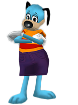

About
About the Developer
Drew Robieson is currently a sophomore Computer Science major at the University of North Carolina Charlotte. In his free time he enjoys programming and playing video games.
Toontown was a MMORPG released by Disney in Summer of 2003. The plot of the game revolves around the fight between happy, fun toons and evil robot businessmen known as cogs. The original game was officially shutdown in September of 2013 although various grups of fans have kept the game alive through fan-made servers.
Toontown Offline is a fan-made recreation of Disney's Toontown. Offline differs from other recreations in that it allows users host their own servers to play on with their friends or play solo without an internet connection.
I recommend you contact the Offline Team directly by going here
